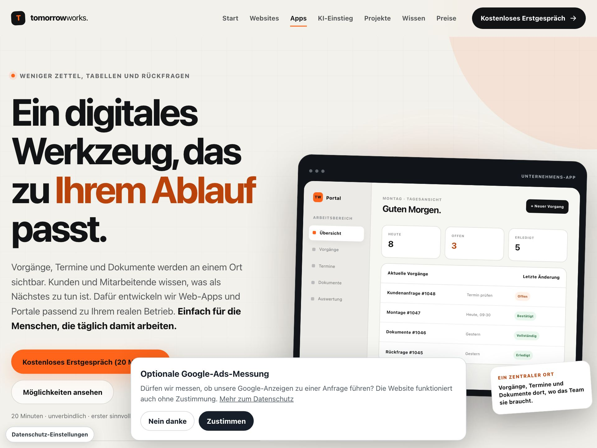

Portale & Buchungen
Für Ihre Kundschaft: Anfragen stellen, Termine wählen, den eigenen Vorgangsstatus einsehen — ohne Anruf und Warteschleife.
Leistung · Apps & Portale
Ein digitales Werkzeug, das zu Ihrem Ablauf passt: Vorgänge, Termine und Dokumente werden an einem Ort sichtbar — einfach für die Menschen, die täglich damit arbeiten.
01 · Einsatzbereiche
Für Ihre Kundschaft: Anfragen stellen, Termine wählen, den eigenen Vorgangsstatus einsehen — ohne Anruf und Warteschleife.
Für Ihr Team: Vorgänge, Planung und Rollen an einem Ort — jeder sieht, was als Nächstes zu tun ist.
Für Ihre Abläufe: Importe und gezielte Anbindungen, wo sie den Alltag wirklich erleichtern — Schnittstellen sind Mittel, nicht Produkt.
02 · Ablauf
Wir schauen auf Ihren realen Arbeitstag — nicht auf Funktionslisten.
Der erste sinnvolle Umfang wird festgelegt: klein, aber wirksam.
Die App entsteht in Etappen — Sie sehen den Fortschritt laufend.
Ihr Team wird eingearbeitet; erweitert wird nur, was sich bewährt.
03 · Planbarkeit
04 · Beispiel

Im eigenen Betrieb entwickelt und eingesetzt: Das Werkstattcockpit verbindet interne Auftragsbearbeitung, Autohausportal, Kundenstatus und Mietwagen in einem gemeinsamen digitalen Ablauf.
Das Erstgespräch ist kostenlos und unverbindlich — erster sinnvoller Umfang statt endloser Funktionsliste.